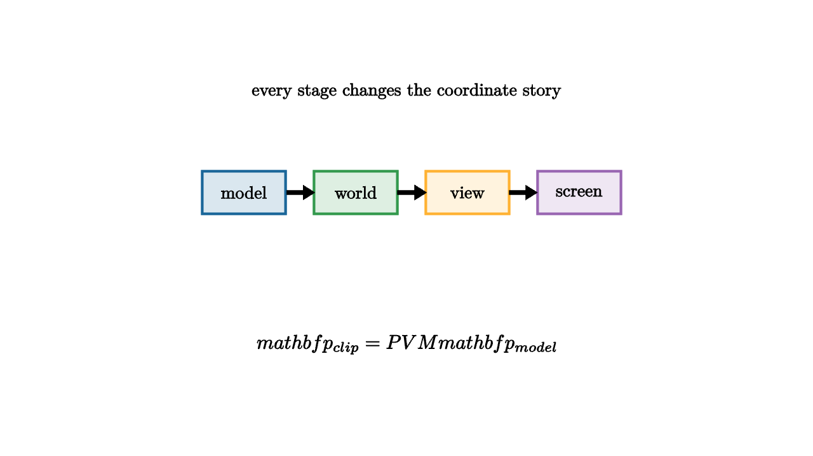

Transform Pipelines Move Worlds To Screens
A vertex in a model file knows where it lives relative to the model. The screen needs to know which pixel it reaches. Between those two facts lies a pipeline of coordinate changes. Graphics programming becomes easier when each stage has a job.
The usual chain is
The model matrix $M$ places the object in the world. The view matrix $V$ describes the camera's coordinate frame. The projection matrix $P$ maps camera-space geometry into clip space. After the perspective divide, viewport rules convert normalized coordinates into screen pixels.

source
let soft = |col, amount| lerp(WHITE, col, amount)
let Box = |pos, label, col| [
center{pos} fill{soft(col, 0.16)} stroke{col, 2.4} Rect([0.82, 0.42]),
center{pos} Text(label, 0.62)
]
mesh diagram = [
Box(1.6l + 0.35u, "model", BLUE),
Box(0.5l + 0.35u, "world", GREEN),
Box(0.6r + 0.35u, "view", ORANGE),
Box(1.7r + 0.35u, "screen", PURPLE),
stroke{BLACK, 2.2} Arrow(1.17l + 0.35u, 0.92l + 0.35u),
stroke{BLACK, 2.2} Arrow(0.08l + 0.35u, 0.18r + 0.35u),
stroke{BLACK, 2.2} Arrow(1.02r + 0.35u, 1.27r + 0.35u),
center{1.35u} Text("every stage changes the coordinate story", 0.62),
center{1.15d} Tex("\\mathbf p_{clip}=PVM\\mathbf p_{model}", 0.70)
]The model transform answers object placement questions. Where is the car in the street? How is the character rotated? How large is the imported mesh? Local vertices are transformed by scale, rotation, and translation into a shared world.
The view transform answers camera questions. Instead of moving the entire world by hand, the view matrix expresses world points in the camera's coordinate frame. If the camera turns right, the world appears to turn left in camera space. This is a coordinate change, not a physical shove.
The projection transform answers visibility and perspective questions. Objects farther from the camera should appear smaller. Lines of sight pass through an image plane. Homogeneous coordinates make that perspective mapping fit into matrix multiplication, followed by division by $w$.
source
camera = Camera([3.0, -3.0, 2.0], [0, 0, 0], [0, 0, 1])
let soft = |col, amount| lerp(WHITE, col, amount)
"Model"
mesh object = [
fill{soft(BLUE, 0.18)} stroke{BLUE, 2.4} Square(0.75),
stroke{BLACK, 2} Arrow(0r, 0.65r),
stroke{BLACK, 2} Arrow(0r, 0.65u),
center{[0, 0, 1.0]} orient_to_camera{camera} Text("model space", 0.62)
]
play Fade(0.8)
"World"
object = shift{[0.8, 0.25, 0]} rotate{0.55} object
play Lerp(1.0)
"Camera"
camera = Camera([1.8, -2.2, 1.15], [0.6, 0.1, 0], [0, 0, 1])
object = [
object,
center{[0.4, 0.2, 1.0]} orient_to_camera{camera} Text("view depends on the camera frame", 0.62)
]
play [CameraLerp(&camera, 1.2), Fade(0.6, [&object])]The order of multiplication matters. Moving an object and then rotating around the origin gives a different result from rotating it first and then moving it. This is why transform stacks are disciplined. A child object inherits the parent's transform, then applies its own local transform. A robot arm, a character skeleton, and a scene graph all use this nesting.
Clipping happens before the final screen mapping. Geometry outside the view volume can be discarded or cut. Then normalized device coordinates are mapped to actual pixels. The same model can be drawn in a small viewport, a full window, or a high-resolution render target because the earlier coordinate stages remain abstract.
The transform pipeline is a practical version of linear algebra. Matrices are not decoration around graphics. They are the language that lets many coordinate systems cooperate: the model's local frame, the world's shared frame, the camera's frame, and the screen's pixel grid.
Homogeneous coordinates
Translations do not fit into ordinary $3\times 3$ linear maps on 3D points. Homogeneous coordinates solve this by adding a fourth coordinate:
A $4\times 4$ matrix can now combine rotation, scale, shear, translation, and projection. Direction vectors use $w=0$, so translations do not move them. Points use $w=1$, so translations apply. This distinction matters for normals, rays, lights, and camera directions.
After projection, the pipeline performs the perspective divide:
This is where far objects shrink. The matrix sets up the ratio, and the divide turns it into screen geometry.
Normals need care
Positions transform by the model matrix. Normals need a related transform, often called the normal matrix. If the model matrix includes nonuniform scale, simply multiplying normals by the same matrix can break perpendicularity.
The correct normal transform uses the inverse transpose of the linear part of the model transform. The reason is geometric: a normal must remain perpendicular to the transformed tangent plane. A shader that lights a scaled object incorrectly often has a normal-transform bug.
Spaces as debugging labels
Many rendering bugs are really space-mixing bugs. A light direction in world space gets dotted with a normal in model space. A texture coordinate is treated like a position. A camera vector is computed before the view transform and used after it.
A useful debugging habit is to name the space of every vector. Write comments or variable names like world_pos, view_dir, model_normal, and clip_pos. The transform pipeline is then a type system for geometry, even in languages that do not enforce it.
When a rendered object appears in the wrong place, the pipeline gives a debugging checklist. Inspect local vertices. Inspect model placement. Inspect camera view. Inspect projection and viewport. The image is the final evidence, but the transform chain tells where the mistake can enter.